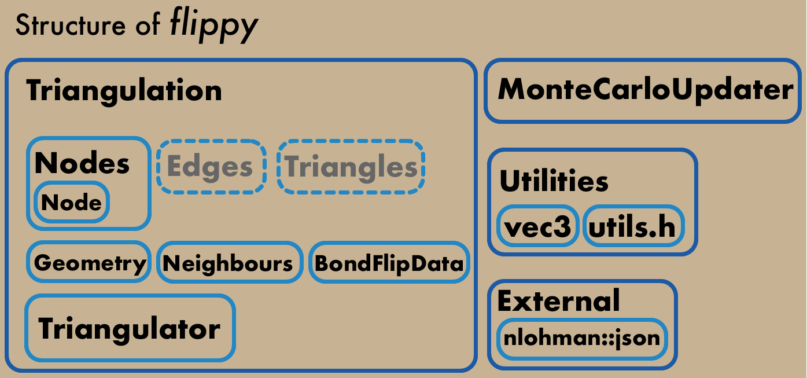

|
flippy
|
|

| |
|
flippy
|
|
|
| |
At its core flippy is a triangulation that can be dynamically and consistently updated. Meaning that flippy provides a triangulation that the user has access to and is able to deform using flippy's high level interface, while flippy takes care of keeping the geometry and topology of the geometry consistently up to date.
Flippy also provides a support class called MonteCarloUpdater that provides and interface to create simple monte carlo simulations that update the triangulation the Metropolis–Hastings algorithm. However, the design of this support class presents a tradeoff between simplicity and completeness. MonteCarloUpdater is most useful for simple MC simulations of a single triangulation, for more complex systems a custom updating routins should be written by the user, for which the interface of the Triangulation class should be used directly.
This is the full API documentation provides the full description the public API of flippy, as well as a wholistic overview of ts structure. In parallel, we provide demo implementations of several model systems that make use of flippy. These demos can be found in the demo sub-folder in the GitHub repository, together with comprehensive readme files that describe the physics and the implementation of individual simulations.
Information on how to get flippy and incorporate it in your project can be found in the readme of the GitHub repository under the heading How to get it.
|  |
|---|
Fig. 1. flippy's highest level interfaces are the Triangulation and the MonteCarloUpdater classes. The Triangulation class is composed of many data structures, and provides an interface to them for the user, or uses them internally for its own function. Classes named in gray with dotted outlines are not implemented but are planned. |